Samuel Adeyanju
About
Human-environment social scientist working on conservation, rural livelihoods, and climate solutions in West Africa.
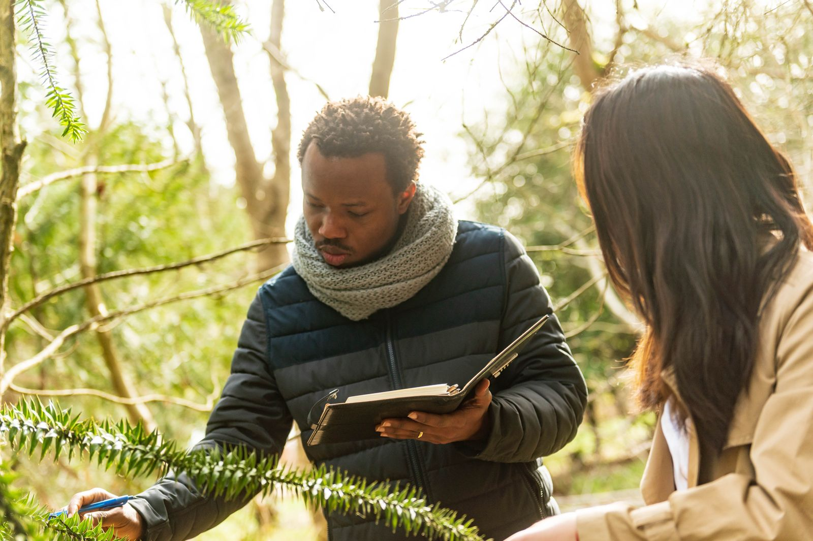
I am a Postdoctoral Researcher at McGill University. My research uses qualitative and participatory methods, including ethnography, interviews, focus groups, and case studies, to examine how rural livelihoods, common-pool resource governance, gender and equity, and conservation interventions interact in West Africa. I link community-level evidence to international conservation and climate policy.
I completed my PhD in Forestry at the University of British Columbia in 2026 as a Vanier Scholar, supervised by Professor Terry Sunderland, and my MSc at UBC as a Mastercard Foundation Scholar. Before graduate school, I earned a first-class degree in Forestry and Wood Technology from the Federal University of Technology, Akure, Nigeria. For more details, see my CV.
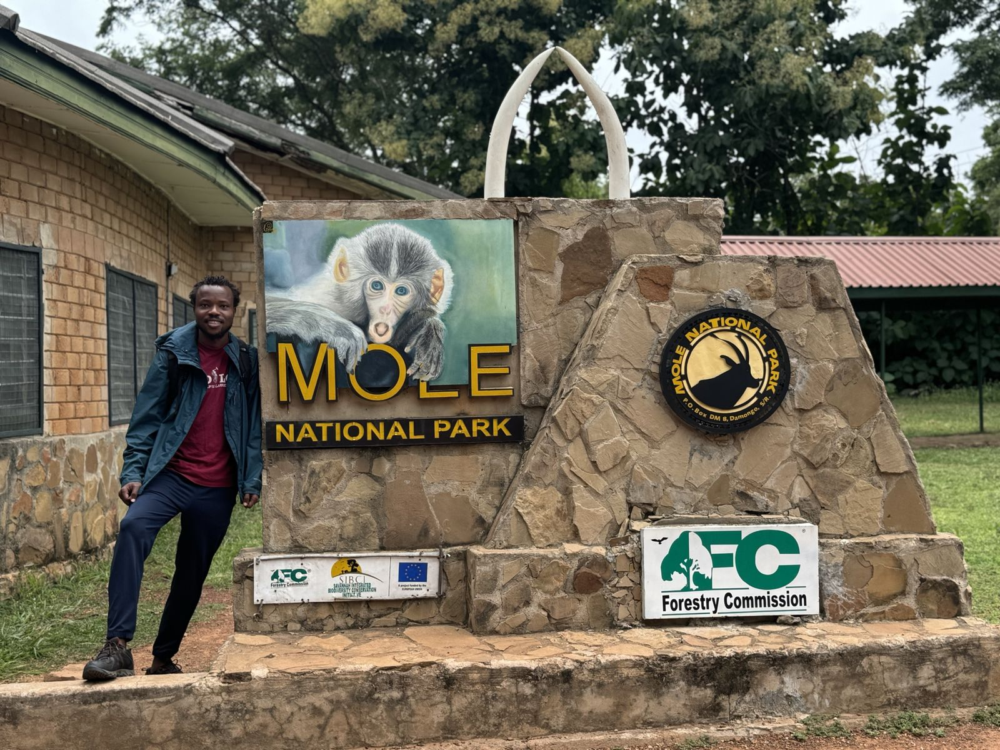
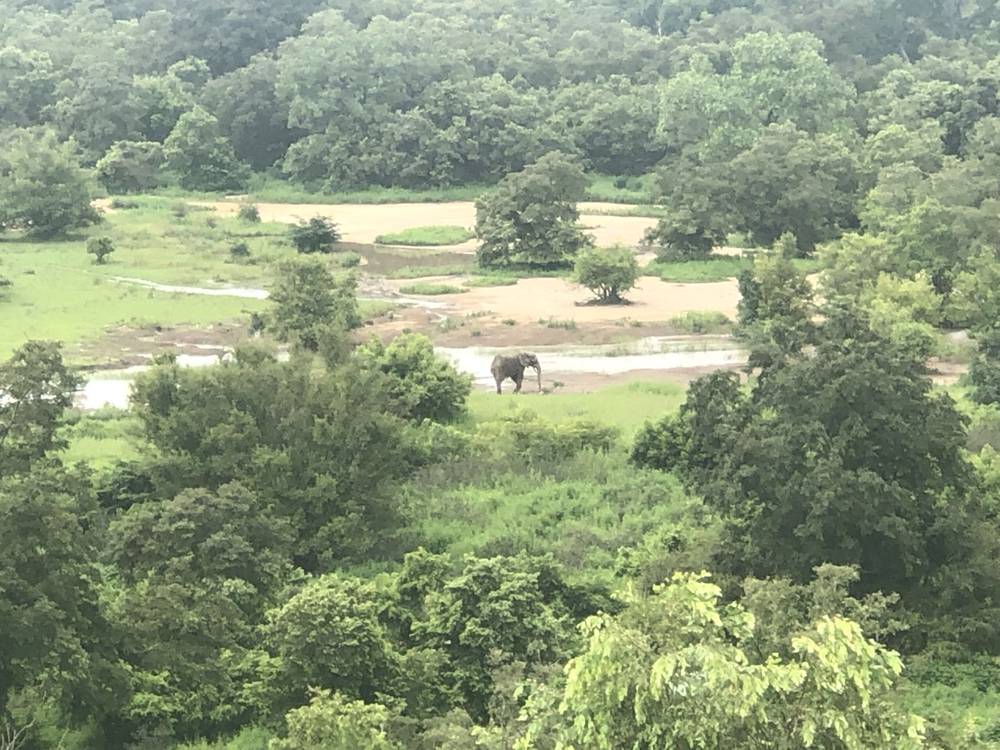
Journey
Experience and education
No entries match that filter.
Engagement
Talks, policy, and media
Conference presentations
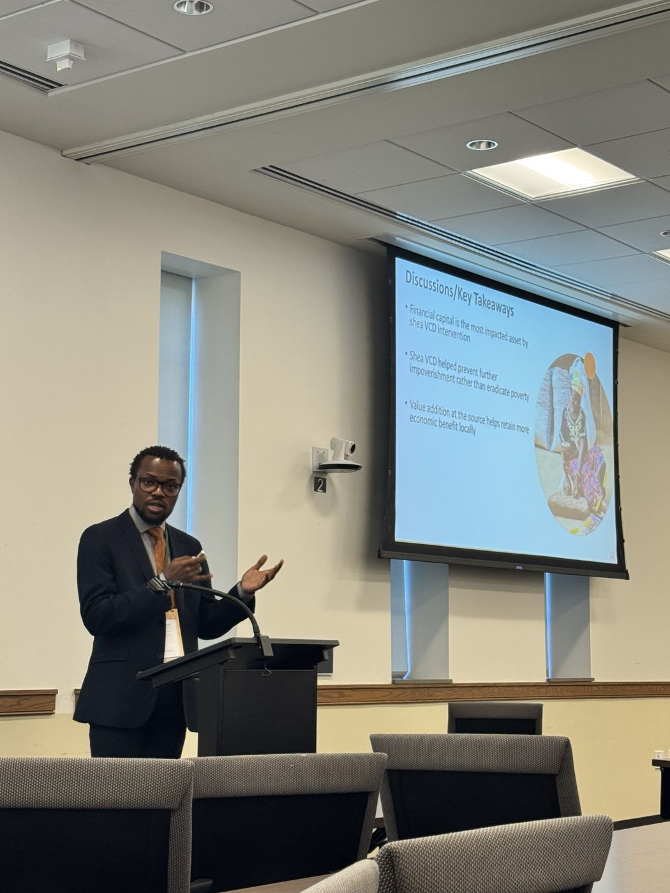
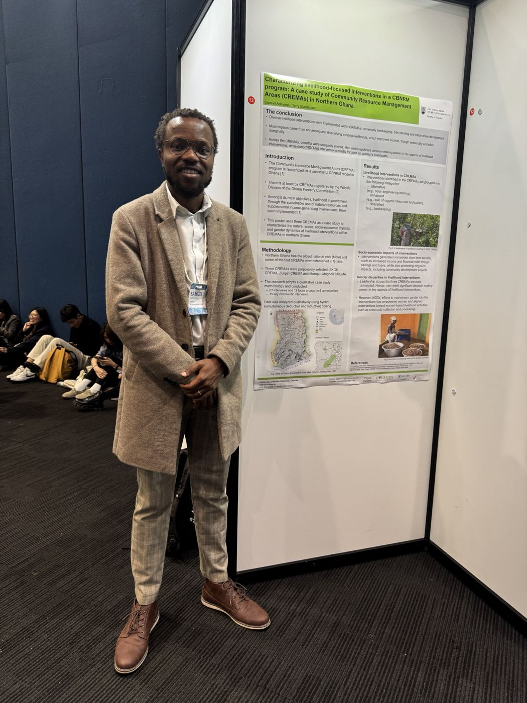
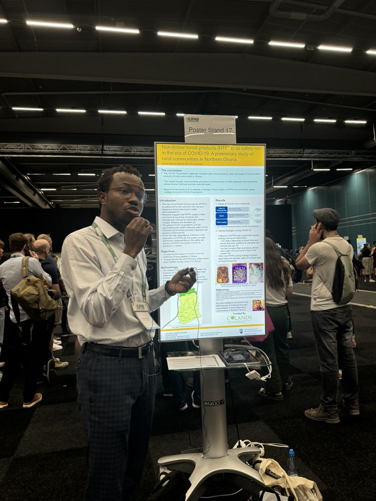
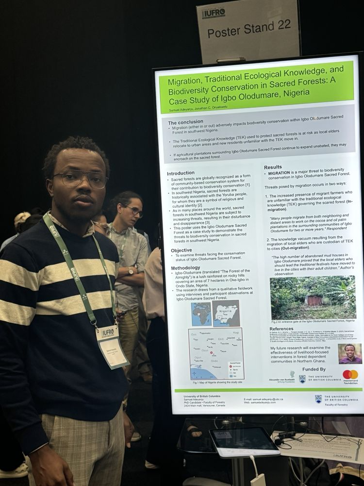
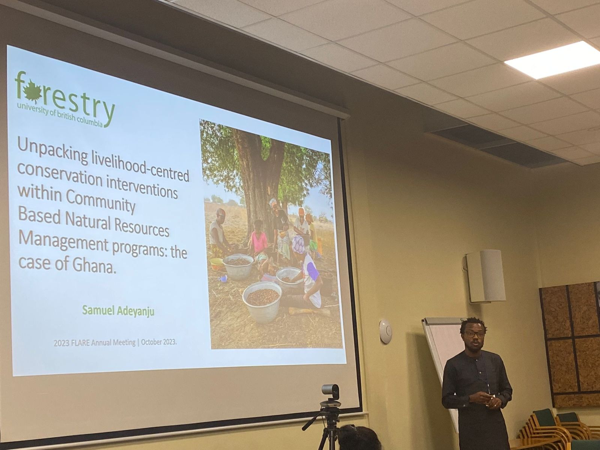
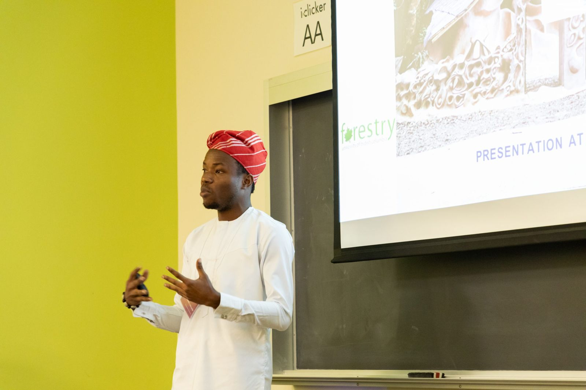
- Commonwealth Forestry Conference, Vancouver (2021)
Policy engagement
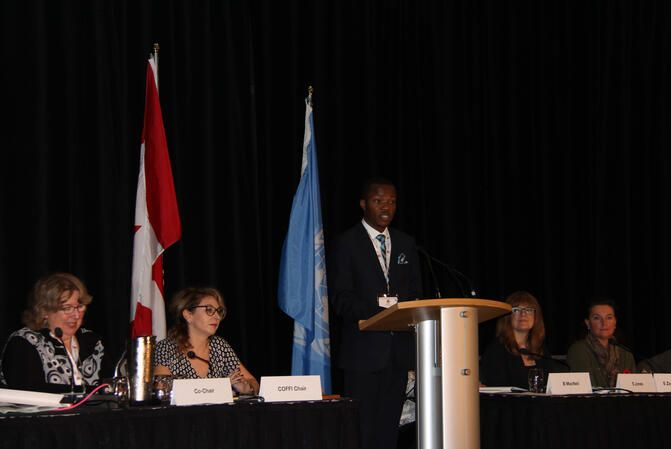
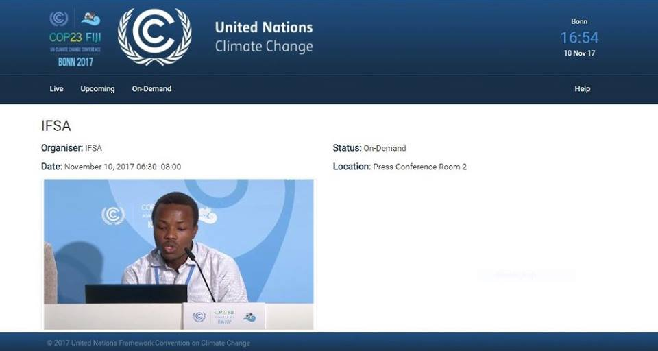
- Panelist, Global Landscapes Forum Biodiversity Digital Conference (2020) and GLF Kyoto (2019)
- Youth keynote and youth delegation lead, UNECE Committee on Forests and the Forest Industry, Vancouver (2018)
- Delegate and IFSA press conference panelist, UNFCCC COP23, Bonn (2017)
Service
- Journal reviewer, Current Research in Environmental Sustainability and Discover Sustainability
- Advisory Group Member, Commonwealth Forestry Association (2021 to present)
- Convener, Black History Month Initiative, UBC Faculty of Forestry (2022 to 2024)
In the media
- Forbes, 2021
- Landscape News, 2022
- InCommon Podcast, 2022